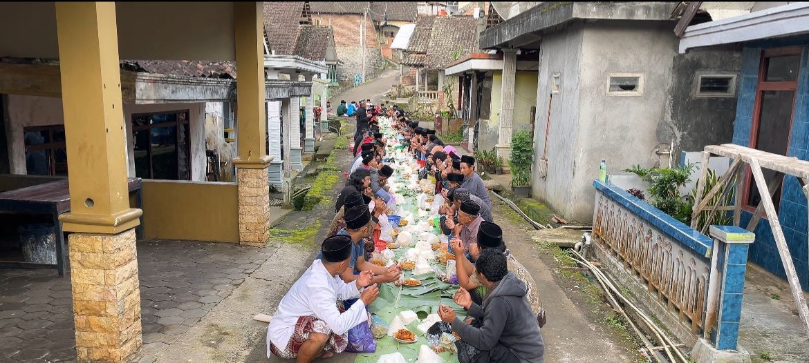
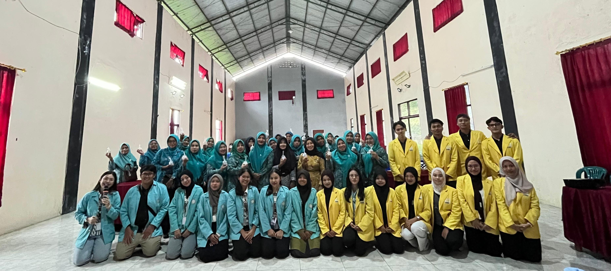
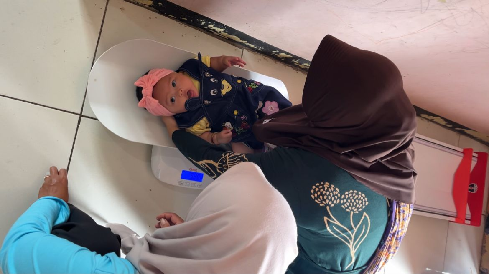

Berita & Informasi Terkini
Informasi terbaru seputar kegiatan dan pembangunan Desa Banyukuning

Musyawarah Desa Tentang Pembangunan Infrastruktur 2025
Pemerintah Desa Banyukuning mengadakan Musyawarah Desa untuk membahas rencana pembangunan infrastruktur tahun 2025...

Warga Dusun Gentan Melakukan Tradisi Nyadran
Seluruh warga dusun Gentan melaksanakan tradisi Nyadran, kemudian dilanjutkan dengan acara selametan...

Pelatihan Pembuatan Lilin Aromaterapi untuk Warga Desa
Pelatihan Pembuatan Lilin Aromaterapi diikuti oleh 50 ibu-ibu PKK dengan materi pembuatan lilin aromaterapi dan pengelolaan usaha...

Gotong Royong Bersih Saluran Air Sebelum Bulan Ramadhan
Seluruh warga Desa Banyukuning mengadakan gotong royong bersih saluran air dalam rangka menyambut bulan Ramadhan...

Posyandu Lansia dan Balita Rutin Bulan Ini
Posyandu rutin dilaksanakan di setiap dusun melayani pemeriksaan kesehatan dan penimbangan balita...

Festival Budaya Desa Banyukuning 2025
Festival Budaya tahunan menampilkan berbagai kesenian tradisional Jawa Tengah yang menarik ribuan pengunjung...